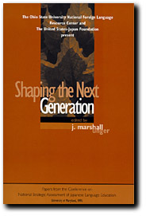

Shaping the Next Generation:
Papers from the Conference on National Strategic Assessment of Japanese Language Education (University of Maryland, 1995)
(Columbus: The Ohio State University
Foreign Language Publications, 1997)
Papers in this volume were written Richard Brecht and Ron
Walton, Chris Brockett, Eleanor H. Jorden, Emiko Konomi,
Shigeru Miyagawa, Mari Noda, Charles Quinn, Jr., and Masakazu
Watabe. The conference and publication of the proceedings was made possible by a grant from
the United States-Japan Foundation.
Last Updated
28 February 2002 by
J. Marshall Unger